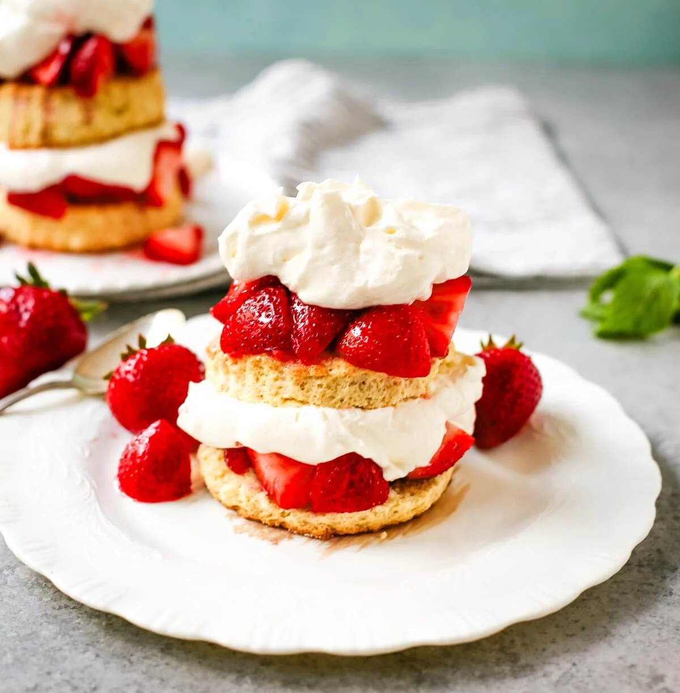

Strawberry Shortcake

Final Product of the Strawberry Shortcake
A classic cake nobody dislikes!
Ingredients
- Strawberries: Of course, a strawberry shortcake needs strawberries. This recipe calls for six cups of fresh strawberries.
- Sugar: You'll use white sugar for both the strawberries and the shortcake.
- Flour: This strawberry shortcake is made almost like biscuits, so you'll need 2 ¼ cups of all-purpose flour.
- Baking Powder: Baking powder helps the shortcake rise.
- Salt: Just a hint of salt adds a depth of flavor to the shortcake.
- Butter: Butter is a classic shortcake ingredient.
- Egg: One egg binds the dough together.
- Half-and-half: This will make the dough rich and moist, but reviewers say they've also had success using milk instead.
- Whipped Heavy Cream: Sweetened vanilla whipped cream tops this cake.
Steps
- Prep the berries: Slice the strawberries and cover them with white sugar.
- Make the batter: Combine the dry ingredients, then cut in the butter until the mixture is crumbly. Add the egg and half-and-half and stir until combined.
- Bake the cake: Pour the batter into the prepared pan and bake until golden brown.
- Assemble the strawberry shortcake: Cut the cake in half. Top the bottom layer with half the strawberries, then replace the top of the cake. Top the cake with the remaining berries and whipped cream.
Home